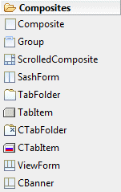
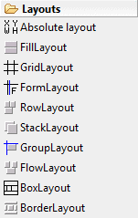
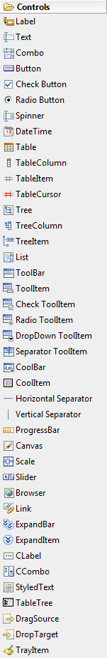
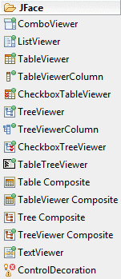
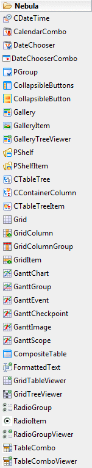
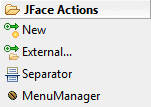
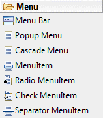

SWT Designer Palette
SWT Designer provides the following palette for creating SWT,
JFace and RCP
applications.
The palette may be fully configured using the
Palette Manager.
|
|
 |
- Composite - Instances of this class are controls which are capable of containing other
controls.
- Group - Instances of this class provide an etched border with
an optional title.
- ScrolledComposite - Instances of this class are controls
which are capable of containing other controls within a scrolling frame.
- SashForm - The SashForm lays out its children in a Row or
Column arrangement (as specified by the orientation) and places a Sash
between the children.
- TabFolder - Instances of this class implement the notebook
user interface metaphor. It allows the user to select a notebook page
from set of pages.
- TabItem - Instances of this class represent a selectable user
interface object corresponding to a tab for a page in a tab folder.
- CTabFolder - Instances of this class implement the notebook
user interface metaphor. It allows the user to select a notebook page
from set of pages.
- CTabItem - Instances of this class represent a selectable
user interface object that represent a page in a notebook widget.
- ViewForm - Instances of this class implement a Composite that
lays out three children horizontally and allows programmatic control of
layout and border parameters. ViewForm is used in the workbench to
implement a view's label/menu/toolbar local bar.
- CBanner - Instances of this class implement a Composite that
lays out its children and allows programmatic control of the layout. It
draws a separator between the left and right children which can be
dragged to resize the right control. CBanner is used in the workbench to
layout the toolbar area and perspective switching toolbar.
|
|
|
 |
-
Absolute (null) Layout - A null layout displays components with specified bounds.
- FillLayout - FillLayout is the simplest layout class. It lays out controls in a single row or column, forcing them to be the same size.
- GridLayout - Instances of this class lay out the control children of a Composite in a grid.
- FormLayout
- Instances of this class control the position and size of the children
of a composite control by using FormAttachments to optionally configure
the left, top, right and bottom edge of each child.
- RowLayout
- Instances of this class determine the size and position of the
children of a Composite by placing them either in horizontal rows or
vertical columns within the parent Composite.
- StackLayout
- This Layout stacks all the controls one on top of the other and
resizes all controls to have the same size and location. The control
specified in topControl is visible and all other controls are not
visible.
- GroupLayout
- This is an SWT port of the Swing GroupLayout. GroupLayout mixes grid
layout and free form layout.
- FlowLayout - The AWT flow layout arranges components in a
left-to-right flow, much like lines of text in a paragraph. Flow layouts
are typically used to arrange buttons in a panel. It will arrange
buttons left to right until no more buttons fit on the same line.
- BoxLayout
- A layout manager that allows multiple components to be laid out either
vertically or horizontally. The components will not wrap so, for
example, a vertical arrangement of components will stay vertically
arranged when the frame is resized.
-
BorderLayout - The AWT border layout lays out a container,
arranging and resizing its components to fit in five regions: north,
south, east, west, and center.
|
|
|
 |
- Label
- Instances of this class represent a non-selectable user interface
object that displays a string or image. When SEPARATOR is specified,
displays a single vertical or horizontal line.
- Text - Instances of this class are selectable user interface objects that allow the user to enter and modify text.
- Combo
- Instances of this class are controls that allow the user to choose an
item from a list of items, or optionally enter a new value by typing it
into an editable text field.
- Button - Instances of this class represent a selectable user interface object that issues notification when pressed and released.
- Check Button - Instances of this class represent a selectable user interface object that issues notification when checked and unchecked.
- Radio Button - Instances of this class represent a selectable user interface object that issues notification when selected and unselected.
- Spinner - Instances of this class are selectable user
interface objects that allow the user to enter and modify numeric
values.
- DateTime - Instances of this class are selectable user
interface objects that allow the user to enter and modify date or time
values.
- Table - Instances of this class implement a selectable user interface object that displays a list of images and strings and issue
notification when selected.
- TableColumn - Instances of this class represent a column in a
table widget.
- TableItem - Instances of this class represent a selectable
user interface object that represents an item in a table.
- TableCursor - A TableCursor provides a way for the user to
navigate around a Table using the keyboard. It also provides a mechanism
for selecting an individual cell in a table.
- Tree - Instances of this class provide a selectable user interface object that displays a hierarchy of items and issue
notification when an item in the hierarchy is selected.
- TreeColumn - Instances of this class represent a column in a
tree widget.
- TreeItem - Instances of this class represent a selectable
user interface object that represents an item in a tree.
- List - Instances of this class represent a selectable user interface object that displays a list of strings and issues
notification when a string selected. A list may be single or multi select.
- ToolBar - Instances of this class support the layout of
selectable tool bar items.
- ToolItem - Instances of this class represent a selectable
user interface object that represents a button in a tool bar.
- Check ToolItem - Instances of this class represent a
selectable user interface object that represents a button in a tool bar
that can be checked and unchecked.
- Radio ToolItem - Instances of this class represent a
selectable user interface object that represents a button in a tool bar
such that only one from group can be selected.
- DropDown ToolItem - Instances of this class represent a
selectable user interface object that represents a button in a tool bar
that can show drop-down menu when clicked.
- Separator ToolItem - Instances of this class represent a
selectable user interface object that represents a separator in a tool
bar.
- CoolBar - Instances of this class provide an area for
dynamically positioning the items they contain.
- CoolItem - Instances of this class are selectable user
interface objects that represent the dynamically positionable areas of a
CoolBar.
- Horizontal Separator - Horizontal separator.
- Vertical Separator - Vertical separator.
- ProgressBar
- Instances of the receiver represent is an unselectable user interface
object that is used to display progress, typically in the form of a bar.
- Canvas - Instances of this class provide a surface for drawing arbitrary graphics.
- Scale - Instances of this class are selectable user interface
objects that represent a range of positive, numeric values.
- Slider - Instances of this class are selectable user interface objects that represent a range of positive, numeric values.
- Browser - A Browser implement the browser user interface
metaphor. It allows the user to visualize and navigate through HTML
documents (Eclipse 3.0 and above only).
- Link - Instances of this class represent a selectable user
interface object that displays a text with links.
- ExpandBar - Instances of this class support the layout of
selectable expand bar items.
- ExpandItem - Instances of this class represent a selectable
user interface object that represents a expandable item in a expand bar.
- CLabel - A Label which supports aligned text and/or an image
and different border styles.
- CCombo - The CCombo class represents a selectable user
interface object that combines a text field and a list and issues
notificiation when an item is selected from the list.
- StyledText - A StyledText is an editable user interface
object that displays lines of text.
- TableTree - A TableTree is a selectable user interface object
that displays a hierarchy of items, and issues notification when an item
is selected. As of 3.1 use Tree, TreeItem and TreeColumn.
- DragSource - DragSource defines the source object for a drag
and drop transfer.
- DropTarget - DropTarget defines the target object for a drag
and drop transfer.
- TrayItem - Constructs a new instance of this class given its
parent (which must be a Tray) and a style value describing its behavior
and appearance. The item is added to the end of the items maintained by
its parent.
|
|
|
|
 |
- ComboViewer - A concrete viewer based on
a SWT Combo control.
- ListViewer - A concrete viewer based on an SWT List control.
- TableViewer - A concrete viewer based on a SWT Table control.
- TableViewerColumn - ViewerColumn implementation for
TableViewer to enable column-specific label providers and editing
support.
- CheckboxTableViewer - Creates a table viewer on a
newly-created table control under the given parent. The table control is
created using the given SWT style bits, plus the SWT.CHECK style bit.
The table shows its contents in a single column, with no header. The
viewer has no input, no content provider, a default label provider, no
sorter, and no filters.
- TreeViewer - A concrete viewer based on an SWT Tree control.
- TreeViewerColumn - ViewerColumn implementation for TreeViewer
to enable column-specific label providers and editing support.
- CheckBoxTreeViewer - A concrete viewer based on a SWT Table
control with checkboxes on each node.
- TableTreeViewer - A concrete viewer based on a SWT TableTree
control.
- Table Composite - Composite with Table that lays out columns
using TableColumnLayout.
- TableViewer Composite - Composite with TableViewer that lays
out columns using TableColumnLayout.
- Tree Composite - Composite with Tree that lays out columns
using TreeColumnLayout.
- TreeViewer Composite - Composite with TreeViewer that lays
out columns using TreeColumnLayout.
- TextViewer - SWT based implementation of ITextViewer and its
extension interfaces.
- ControlDecoration - ControlDecoration renders an image
decoration near a control. It allows clients to specify an image and a
position for the image relative to the control. A ControlDecoration may
be assigned description text, which can optionally be shown when the
user hovers over the image. Clients can decorate any kind of control.
|
|
|
|

The palette is truncated |
- CDateTime - The CDateTime provides both
textual and graphical means for setting the attributes of a
java.util.Date class.
- CalendarCombo - The Calendar Combo Widget is a combo box
widget that opens a calendar when dropped down. The calendar is modelled
after Microsoft Outlook's calendar widget and acts and behaves exactly
the same (and it is also theme based).
- DateChooser - DateChooser widget presents the monthly view of
a calendar for date picking.
- DateChooserCombo - DateChooserCombo widget is a date field
editor that combines a text field and a popup calendar. This widget is
based on FormattedText and DateChooser.
- PGroup - The PGroup widget is a expandable/collapsible
composite widget with attractive styling and an extensible design.
- CollapsibleButtons - The Collapsible Buttons Widget is a
customizable collapsible buttons widget modeled after the bottom left
buttons widget in Microsoft Outlook. The widget is highly customizable
from simple flags for setting things on and off, to extending interfaces
for controlling how the buttons should be painted and other more
advanced aspects.
- CollapsibleButton - Drop new collapsible button on
CollapsibleButtons widget.
- Gallery - SWT Widget that displays a picture gallery.
- GalleryItem - Picture item for Gallery widget.
- GalleryTreeViewer - A concrete tree viewer based on an
Gallery widget.
- PShelf - The PShelf widget is a composite widget that is
similar to a tab folder. It contains items which can be selected to show
their client areas.
- PShelfItem - Item for PShelf widget.
- CTableTree - The CTableTree widget is a custom TableTree
component created with two primary purposes: 1.Allow items to expand and
collapse independently of one another 2.Separate the creation and
maintenance of Cells from the implementation of the TableTree.
- CContainerColumn - Column item for CTableTree widget.
- CTableTreeItem - Row item for CTableTree widget.
- Grid - The Grid widget is a spreadsheet/table component that
offers features not currently found in the base SWT Table. Features
include cell selection, column grouping, column spanning, row headers,
and more.
- GridColumn - Instances of this class represent a column in a
grid widget.
- GridColumnGroup - Instances of this class represent a column
group in a grid widget.
- GridItem - Instances of this class represent a selectable
user interface object that represents an item in a grid.
- GanttChart - The GANTT chart is a fully customizable widget
for displaying anything from a simple chart to allowing user interaction
via drag and drop and resizing and well as dependency interaction.
- GanttGroup - A GanttGroup is a group of GanttEvents that will
all draw on the same horizontal "line" in the GanttChart.
- GanttEvent - One GanttEvent represents one "active" object
int the GANTT chart.
- GanttCheckpoint - Convenience class for creating a checkpoint
instead of using the constructors on GanttEvent.
- GanttImage - Convenience class for creating an image in the
chart instead of using the constructors in GanttEvent.
- GanttScope - A convenience class for creating a GanttScope
instead of using the specific constructors on the GanttEvent.
- CompositeTable - CompositeTable is a custom SWT grid control
that: 1.Gives you control over the layout of your rows. 2.Automatically
edits in place using any SWT control Manages CRUD operations simply and
automatically. 3.Requests only visible data using a virtual table API
for maximum scalability and performance.
- FormattedText - FormattedText is a decorator component adding
input and display mask capabilities on a Text widget. Formatting is
based on a public formatter API.
- GridTableViewer - A concrete table viewer based on an Grid
control.
- GridTreeViewer - A concrete tree viewer based on an Grid
control.
- RadioGroup - SWT Widget that presents a group of radio
buttons.
- RadioItem - Instances of this class represent a selectable
user interface object that represents an radio button in a radio group.
- RadioGroupViewer - A concrete viewer based on a Nebula
RadioGroup control.
- TableCombo - The TableCombo class represents a selectable
user interface object that combines a label, textfield, and a table and
issues notification when an item is selected from the table.
- TableComboViewer - A concrete viewer based on a Nebula
TableCombo control.
- TitledSeparator - An enhanced separator with text and/or an image.
- HorizontalSpinner - Instances of this class are selectable user
interface objects that allow the user to enter and modify numeric
values.
- ProgressCircle - This widget is a graphical presentation of a ratio.
|
|
 |
-
ColumnLayout - This layout manager arranges children of the
composite parent in vertical columns. All the columns are identical size
and children are stretched horizontally to fill the column width. The
goal is to give layout some reasonable range of column numbers to allow
it to handle various parent widths. That way, column number will drop to
the lowest number in the range when width decreases, and grow up to the
highest number in the range when allowed by the parent width.
- TableWrapLayout - This implementation of the layout algorithm
attempts to position controls in the composite using a two-pass
autolayout HTML table algorithm recommeded by HTML 4.01 W3C
specification. The main differences with GridLayout is that it has two
passes and that width and height are not calculated in the same pass.
- Button - Instances of this class represent a selectable user
interface object that issues notification when pressed and released.
- Composite - Instances of this class are controls which are
capable of containing other controls.
- Composite Separator - Creates the composite that can
serve as a separator between various parts of a form. Separator height
should be controlled by setting the height hint on the layout data for
the composite.
- Label - Instances of this class represent a non-selectable
user interface object that displays a string or image. When SEPARATOR is
specified, displays a single vertical or horizontal line.
- Hyperlink - Hyperlink is a concrete implementation of the
abstract base class that draws text in the client area. Text can be
wrapped and underlined. Hyperlink is typically added to the hyperlink
group so that certain properties are managed for all the hyperlinks that
belong to it.
- ImageHyperlink - This class extends hyperlink widget by
adding the capability to render an image relative to the text. If no
text has been set, only image will be shown. Images for hover and active
states can be set in addition to the normal state image.
- FormText - This class is a read-only text control that is
capable of rendering wrapped text. Text can be rendered as-is or by
parsing the formatting XML tags. Independently, words that start with
http:// can be converted into hyperlinks on the fly.
- Separator - A horizontal or vertical line used to separate
other controls.
- Table - Instances of this class implement a selectable user
interface object that displays a list of images and strings and issue
notification when selected.
- Text - Instances of this class are selectable user interface
objects that allow the user to enter and modify text.
- Tree - Instances of this class provide a selectable user
interface object that displays a hierarchy of items and issue
notification when an item in the hierarchy is selected.
- ExpandableComposite - This composite is capable of expanding
or collapsing a single client that is its direct child. The composite
renders an expansion toggle affordance (according to the chosen style),
and a title that also acts as a hyperlink (can be selected and is
traversable). The client is layed out below the title when expanded, or
hidden when collapsed.
- Section - A variation of the expandable composite that adds
optional description below the title. Section is often used as a basic
building block in forms because it provides for logical grouping of
information.
- Form - Form is a custom control that renders a title and an
optional background image above the body composite. It can be used alone
when part of parents that are scrolled. If scrolling is required, use
ScrolledForm instead because it has an instance of Form and adds
scrolling capability.
- ScrolledForm - ScrolledForm is a control that is capable of
scrolling an instance of the Form class. It should be created in a
parent that will allow it to use all the available area (for example, a
shell, a view or an editor).
|
|
|

|
- New - Adds new subclass of
Action to this form and allows to drop it on design canvas.
- External - Allows to select some existing Action type
(in separate external class) and drop it on design canvas.
- Separator - A separator is a special kind of
contribution item which acts as a visual separator and,
optionally, acts as a group marker. Unlike group markers,
separators do have a visual representation for menus and
toolbars.
- MenuManager - Creates a new MenuManager to represent
a top-level pull down menu or a cascade menu.
|
|
|

|
- Menu Bar - Instances of this class
represent horizontal menu bar.
- Popup Menu - Popup menu that can be dropped on any
Control.
- Cascade Menu - Special MenuItem that has cascade
sub-menu.
- MenuItem - Instances of this class represent a
selectable user interface object that represents an item in a
menu.
- Radio MenuItem - Instances of this class represent a
selectable user interface object that issues notification when
checked and unchecked. Only one of them can be checked in same
group.
- Check MenuItem - Instances of this class represent a
selectable user interface object that issues notification when
checked and unchecked. Any number of them can be checked in same
group.
- Separator MenuItem - Special MenuItem that looks as
horizontal separator line.
|
|

|
- BooleanFieldEditor - A field
editor for a boolean type preference.
- StringFieldEditor - A field editor for a string type
preference.
- IntegerFieldEditor - A field editor for an integer type
preference.
- DoubleFieldEditor - A field editor for an double type
preference.
- ComboFieldEditor - A field editor for a combo box that
allows the drop-down selection of one of a list of items.
- RadioGroupFieldEditor - A field editor for an
enumeration type preference. The choices are presented as a list
of radio buttons.
- ColorFieldEditor - A field editor for a color type
preference.
- FontFieldEditor - A field editor for a font type
preference.
- ScaleFieldEditor - A field editor for an integer type
preference.
- PathEditor - A field editor to edit directory paths.
- DirectoryFieldEditor - A field editor for a directory
path type preference. A standard directory dialog appears when
the user presses the change button.
- FileFieldEditor - A field editor for a file path type
preference. A standard file dialog appears when the user presses
the change button.
|
|
|